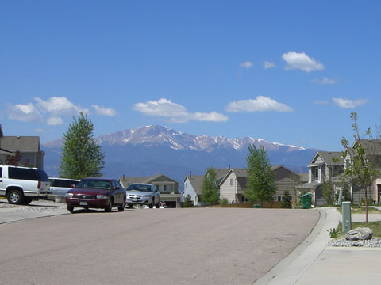
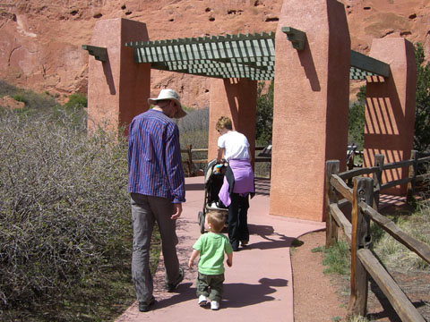
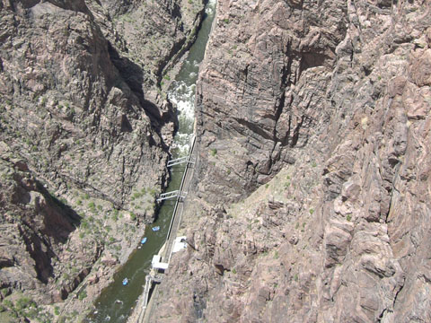
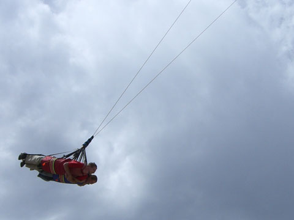
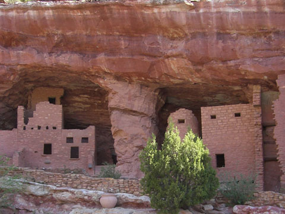
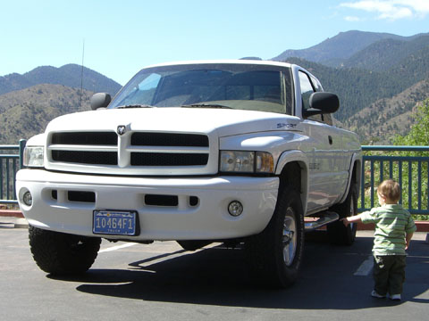
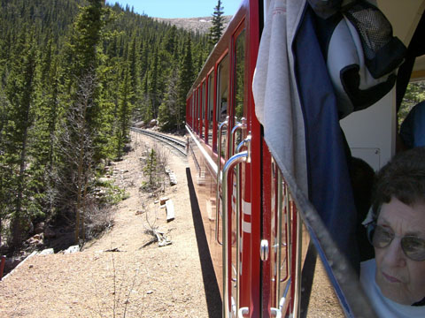
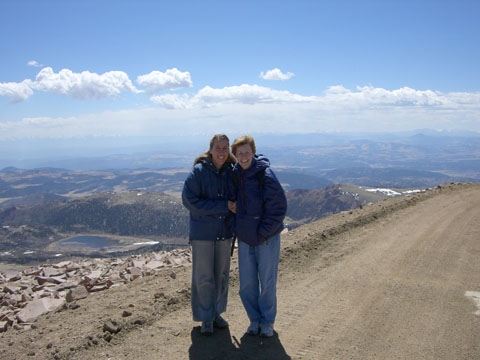

america
colorado springs

we visited colorado springs to see kasey, todd and wren. they have a great house looking out over the mountains.

one of our day trips was out to the nearby rock formations at the "garden of the gods" where wren got in some walking practice

another day trip was out to a nearby huge canyon. notice the blue rafts off for some white water rafting.

we also got a bit of freefall from the "skycoaster".

at nearby manitau springs we got to check out some old indian cave dwellings.

wren favorite thing to do in the car was pointing out trucks and calling out "truck". getting this close had him speechless (but still pointing).

for our last trip out we took a cog rail train up to the top of pikes peak.

here's ren and kasey at the top with the rockies in the background.